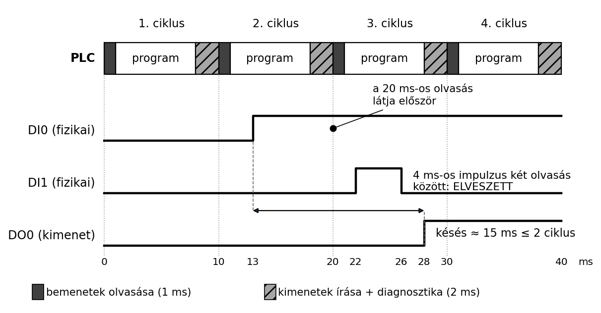
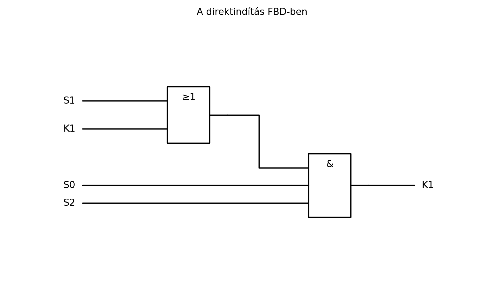
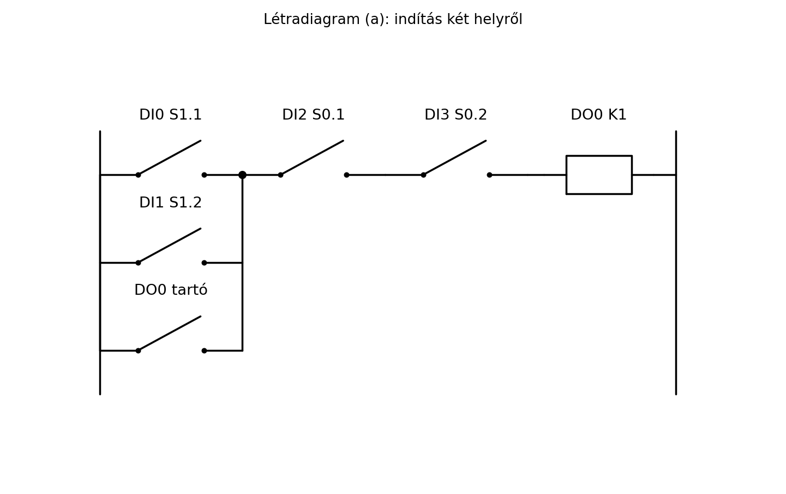
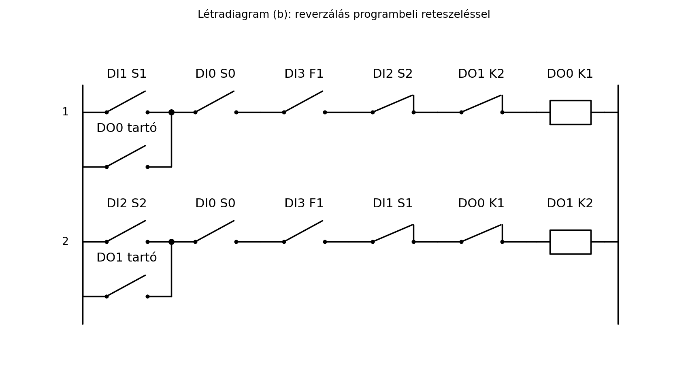
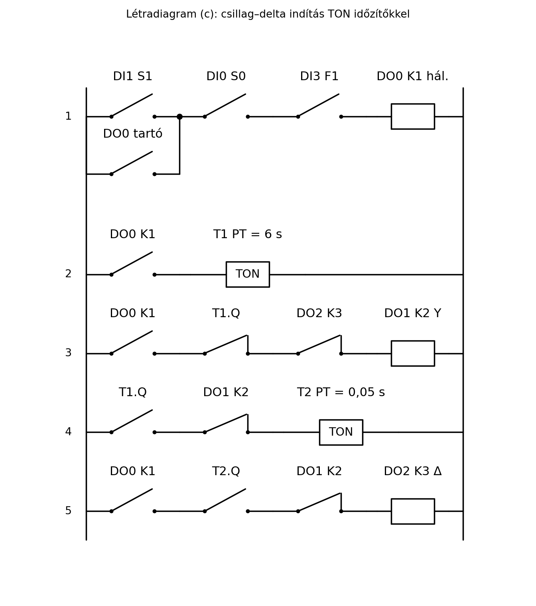
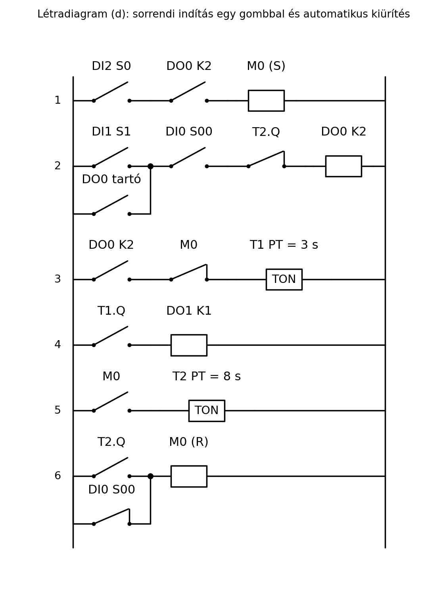
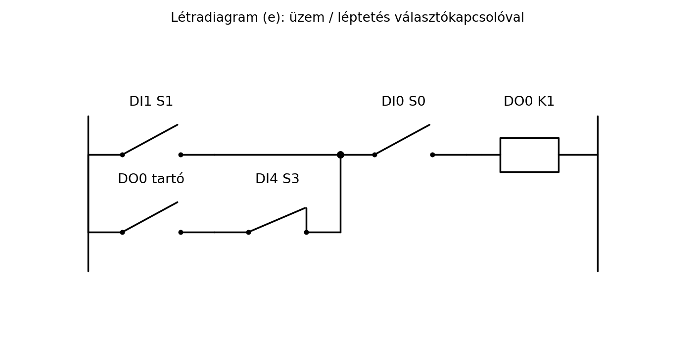

Statikus változat (mint a PDF-ben)
A hagyományos relés motorvezérlés – direktindítás, önfenntartás, reverzálás, csillag–delta – jól működik, amíg a vezérlési logika rögzített. Amint a megrendelő azt kéri, hogy a szivattyú csak akkor induljon, ha a tartály szintje alacsony, a nyomás megfelelő, a vészleállító nincs benyomva, és egy kézi kapcsoló is engedélyez, a relés huzalozás gyorsan áttekinthetetlenné válik. Minden új feltétel új relét, új segédérintkezőt és új vezetéket jelent. A módosítás pedig a kapcsolószekrény átszerelésével jár.
A programozható logikai vezérlő (PLC) ezt a problémát oldja meg: a logikát nem vezetékek, hanem program tárolja. Ugyanaz a hardver más programmal más feladatot lát el, a módosítás pedig gyakran csak a program átírása. A PLC ezért ma már a motorvezérlések és az ipari elosztóberendezések alapvető eleme.
Továbbvitt eredmény. A PLC-s vezérlés itt megismert felépítése, a be- és kimenetek kezelése, valamint a vészleállító független bekötésének elve közvetlenül szükséges a frekvenciaváltók és lágyindítók vezérlésének megértéséhez a Motorvédelmek, lágyindítók és frekvenciaváltók az elosztóban alfejezetben.
Vegyünk egy egyszerű direktindítást önfenntartással. A hagyományos kapcsolásban a Start nyomógomb (NO) és a Stop nyomógomb (NC) sorban van a K1 mágneskapcsoló tekercsével, és a K1 segédérintkező (NO) párhuzamosan a Start gombbal biztosítja az önfenntartást. Ez a kapcsolás a Direktindítás, önfenntartás és kezelőszervek alfejezetből már ismert.
Ugyanezt PLC-vel úgy valósítjuk meg, hogy a Start és Stop gombokat a PLC bemeneteire kötjük, a K1 tekercset pedig a PLC egyik kimenetére. A programban egy „öntartó” logikai ágat hozunk létre: ha a Start bemenet aktív, vagy a K1 kimenet már aktív, és a Stop nincs benyomva, akkor a K1 kimenet aktív marad. A kapcsolás logikája ugyanaz, csak a kapcsolást nem vezetékek, hanem a program utasításai valósítják meg.
A létradiagram bal oldali függőleges vonala a bal oldali (jelvezető) sín, a jobb oldali a visszatérő sín. A felső ágban a Start gomb (S1) NO kontaktusa, a Stop gomb (S0, hardveresen NC jeladó, ezért a programban NO kontaktussal vizsgálva) és a K1 kimenet (tekercs) van sorosan. Itt a K1 a mágneskapcsolót vezérlő PLC-kimenet neve; az alfejezet későbbi kidolgozott példájában (direktindítás PLC-vel) ugyanez a kimenet a DO0 címet kapja. Az alsó ágban a K1 kimenet saját NO kontaktusa (tartóérintkező) párhuzamosan kapcsolódik a Start gombbal: ha a K1 kimenet bekapcsolt, a Start elengedése után is tartja magát. A HTML-kiadás interaktív változatában a gombok lenyomhatók, és lépésenként követhető, melyik ágon halad a jel.
Definíció. A programozható logikai vezérlő (PLC, Programmable Logic Controller) olyan ipari számítógép, amely bemenetein érzékeli a folyamat állapotát (nyomógombok, érzékelők), a tárolt program szerint logikai döntéseket hoz, és kimenetein vezérli a beavatkozókat (mágneskapcsolók, szelepek, jelzőlámpák).
A PLC fő részei: - Központi egység (CPU): a programot tárolja és végrehajtja. - Bemeneti egység (input, I): a külső jeleket fogadja, galvanikusan leválasztja és a CPU számára értelmezhető jelszintre alakítja. - Kimeneti egység (output, O): a CPU döntéseit a külső áramkörök felé kapcsolja (relé, tranzisztor vagy triak kimenet). - Tápegység: a belső elektronika számára stabil feszültséget állít elő. - Kommunikációs interfész: programozáshoz, felügyelethez, más készülékekkel való adatcseréhez.
A PLC nem folyamatosan, hanem ciklikusan dolgozik. A ciklus lépései:
Szabály. A ciklusidő jellemzően 1–20 ms, de ez a program hosszától és a készülék típusától függ. A gyakorlatban ez azt jelenti, hogy a PLC „észreveszi” a bemeneti változást, végrehajtja a logikát, és a kimeneten legrosszabb esetben kb. két ciklusidő (és a be-/kimeneti modul késleltetése) után jelenik meg a változás. A motorvezérléseknél ez a késés általában elhanyagolható, de nagyon gyors folyamatoknál (pl. pozícióvezérlés) már számít.
A ciklikus működés következményeit az alábbi idővonal mutatja egy 10 ms-os ciklusidejű példán (olvasás 1 ms, program 7 ms, írás és diagnosztika 2 ms).

Kövesd a DI0 jelét: 13 ms-nál emelkedik, de az éppen futó program még a 10 ms-kor beolvasott bemeneti képpel dolgozik, ezért a változást csak a 20 ms-os olvasás veszi át, és a DO0 a 3. ciklus írásakor, 28 ms-nál vált; a késés 15 ms, legrosszabb esetben is legfeljebb kb. két ciklusidő. A DI1 4 ms-os impulzusa két olvasás közé esik, ezért a program soha nem „látja”. Ha egy jeladó (impulzusadó, gyors érzékelő) a ciklusidőnél rövidebb impulzust ad, nagy sebességű számlálóbemenet vagy megszakításos (interrupt) bemenet kell (gyártófüggő megoldás). Kérdés: legalább milyen hosszú legyen egy impulzus, hogy egy 10 ms-os ciklusú PLC biztosan észlelje? (Válasz: hosszabb legyen egy teljes ciklusidőnél – itt 10 ms-nál –, mert csak így esik bele biztosan egy olvasásba; ehhez jön még a bemeneti modul szűrési ideje.)
Digitális bemenet (DI): csak két állapotot érzékel: aktív (logikai 1) vagy inaktív (logikai 0). A bemenet tipikusan 24 V DC feszültségszintet vár, és a bemeneti áram néhány mA. Például egy egyszerűsített modellben (a valódi digitális bemenet nem egyszerű ellenállás, a 4,7 kΩ modellérték; ellenőrizendő: gyártói adatlap), ha a bemeneti ellenállás 4,7 kΩ, akkor a bemeneti áram:
A digitális bemenetre nyomógombot, végálláskapcsolót, reléérintkezőt, közelítésérzékelőt köthetünk.
Digitális kimenet (DO): két állapota van: be (vezet) vagy ki (szakad). A kimenet lehet: - relés kimenet: galvanikusan leválasztott, egyaránt kapcsolhat egyen- és váltakozó feszültséget, de lassabb (jellemzően 10 ms) és korlátozott az élettartama; - tranzisztoros kimenet: csak egyenfeszültséget kapcsol, gyors (jellemzően < 1 ms), nincs mechanikus kopás; - triakos kimenet: váltakozó feszültséget kapcsol, gyors, de terhelésfüggő.
A motorvezérlésekben a PLC kimenet jellemzően egy segédrelét vagy közvetlenül a mágneskapcsoló 24 V DC tekercsét vezérli. A relés kimenet névleges árama tipikusan 2 A, ezért közvetlenül nagyobb terhelést (pl. 230 V-os mágneskapcsoló tekercs) általában csak akkor kapcsolhat, ha az áram a határon belül van – ellenkező esetben segédrelét kell közbeiktatni. A pontos terhelhetőséget mindig a gyártói adatlap adja meg (ellenőrizendő: gyártói adatlap).
Analóg bemenet (AI): folytonos jelet fogad, például 0–10 V feszültséget, 0(4)–20 mA áramjelet, vagy ellenállás-hőmérő (Pt100) jelét. A PLC ezt a jelet digitális számmá alakítja (például 0–10 V → 0–27648). Analóg bemenetre hőmérséklet-, nyomás-, szint- vagy áramlásérzékelőt kötünk. A motorvezérléseknél analóg bemenet használható például frekvenciaváltó alapjelének vagy hőmérséklet-felügyeletnek. A 4–20 mA-es áramhurok rajza és hibakeresése: Erősítők, műveleti erősítő és szűrők; a nyers érték átszámítása fizikai mennyiségre: Vezérlőberendezések informatikai hálózatai és HMI.
Analóg kimenet (AO): folytonos jelet ad ki, például 0–10 V vagy 4–20 mA. Ezzel lehet egy frekvenciaváltó fordulatszám-alapjelét vezérelni; a váltó analóg bemeneteit a Motorvédelmek, lágyindítók és frekvenciaváltók az elosztóban teljes leágazás-rajza mutatja.
Szabály. A leggyakoribb ipari jelszint a 24 V DC, ezért a PLC bemenetei és a vezérlési körök is ezen a feszültségen működnek. A 24 V DC törpefeszültség az áramütés szempontjából kisebb kockázatú, mint a 230 V AC, de zárlatra és vezetékezési hibákra itt is gondolni kell, és a tápellátást túláramvédelemmel kell ellátni.
Figyelem. Az analóg bemenet típusát a hardverkonfigurációban be kell állítani (feszültség vagy áram mód). Ha 4–20 mA-es érzékelőt kötünk 0–10 V-os bemenetre, a jel értelmezhetetlen lesz, és a bemenet károsodhat.
A kis motorvezérlésekhez többnyire kompakt PLC-t használunk, amelyben a tápegység, a CPU és néhány be- és kimenet egy házban van. Az alábbi ábra egy általános kivitelt mutat: 1 a 24 V DC tápkapcsok (L+, M) és a PE; 2 a digitális bemenetek (DI0…DI7) a közös kapoccsal (1M); 3 a bemeneti LED-ek; 4 az állapot-LED-ek (RUN, STOP, ERR); 5 a programozó/hálózati port; 6 a ház belsejében a CPU; 7 a relés kimenetek (DO0…DO3) a csoport közös kapcsával (1L); 8 a kimeneti LED-ek; 9 a kivehető kapocsléc; 10 a DIN-sín-retesz.
A bemeneti és a kimeneti LED-ek a bekötés leggyorsabb ellenőrzői: ha a nyomógomb megnyomásakor a bemeneti LED nem gyullad ki, a hiba a program előtt, a huzalozásban van. A kapocsjelölés és a címzés gyártónként eltér (a könyv a DI/DO írásmódot használja), ezért mindig a gyártói bekötési rajz a mérvadó. A HTML-kiadásban a részekre mutatva megjelenik a szerepük.
Egy valódi PLC-s vezérlés bekötése több, mint három nyomógomb és egy kimenet. Példánk a Reverzáló kapcsolás és reteszelés alfejezet végálláskapcsolós kocsijának PLC-változata: egy kocsi előre és hátra jár, a pálya két végén végálláskapcsoló, középen egy induktív közelítéskapcsoló jelzi a kocsit. A tervezés első lépése az I/O lista:
| Cím | Jel | Jeladó / beavatkozó | NO/NC | Megjegyzés |
|---|---|---|---|---|
| DI0 | S0 | STOP nyomógomb | NC | huzalszakadásra biztonságos: alaphelyzetben 1 |
| DI1 | S1 | ELŐRE nyomógomb | NO | |
| DI2 | S2 | HÁTRA nyomógomb | NO | |
| DI3 | B1 | végálláskapcsoló ELŐRE | NC, kényszernyitású | alaphelyzetben 1, a végálláson 0 |
| DI4 | B2 | végálláskapcsoló HÁTRA | NC, kényszernyitású | alaphelyzetben 1, a végálláson 0 |
| DI5 | Q1 13–14 | motorvédő kapcsoló segédérintkezője | NO | 1 = a Q1 bekapcsolva |
| DI6 | K1 43–44 | kontaktor-visszajelzés | NO | a K2 43–44 párhuzamosan köthető (opcionális) |
| DI7 | B3 | induktív közelítéskapcsoló „kocsi középen” | PNP, záró | háromvezetékes (BN, BU, BK) |
| DO0 | K1 | kontaktor ELŐRE (230 V AC tekercs) | relés, 1L csoport | S5 és K2 21–22 a kimenet után |
| DO1 | K2 | kontaktor HÁTRA (230 V AC tekercs) | relés, 1L csoport | S5 és K1 21–22 a kimenet után |
| DO2 | H1 | üzemjelző lámpa 24 V DC | tranzisztoros, 2L+ csoport | |
| DO3 | H2 | zavarjelző lámpa 24 V DC | tranzisztoros, 2L+ csoport |
Az I/O lista alapján készül a bekötési rajz. Kövesd rajta balról jobbra a tápellátást, a bemeneteket, majd a kétféle kimeneti csoportot.
![PLC bekötési lap: reverzáló kocsi végálláskapcsolókkal (24 V DC bemenetek, tranzisztoros és relés kimenetek) - Bemenetek (forrás típusú, PNP): a nyomógombok, végálláskapcsolók és segédérintkezők egyik kapcsa az L+ 24 V-on, a másik a DI-kapcson; az 1M közös kapocs a 0 V-on. A B3 háromvezetékes közelítéskapcsoló: BN (barna) +24 V, BU (kék) 0 V, BK (fekete) a jel. Tranzisztoros kimenetek (2L+ csoport, 24 V DC): DO2 → H1 üzemjelző, DO3 → H2 zavarjelző. Relés kimenetek (1L csoport, 230 V AC): DO0 → S5 vészleállító 11–12 → K2 21–22 → K1 A1, DO1 → S5 21–22 → K1 21–22 → K2 A1; a vészleállító és a K1/K2 retesz a PLC kimenete után, a programtól függetlenül bont. *A 0 V PE-re kötése: ellenőrizendő (MSZ EN 60204-1).](assets/ve118-diagram-1.png)
Ábraolvasás. A G1 24 V DC tápegység az F4 kismegszakítón (2 A, példaérték) át az L+ sínt táplálja; a 0 V (M) sínt a PE-re kötjük, hogy egy testzárlat ne maradjon észrevétlen (ellenőrizendő: MSZ EN 60204-1, a vezérlőáramkör földelése). A bemeneti kártya forrás típusú (PNP): az 1M közös kapocs a 0 V-on van, ezért a DI-kapocs akkor 1, ha a jeladó a +24 V-ot rákapcsolja – a nyomógombok, végálláskapcsolók és segédérintkezők egyik kapcsa ezért az L+ sínen, a másik a DI-kapcson van. A B3 háromvezetékes közelítéskapcsoló barna (BN) ere a +24 V-ra, kék (BU) ere a 0 V-ra, fekete (BK) jelvezetéke a DI7-re csatlakozik; a háromvezetékes érzékelő bekötésének részletes magyarázata (érszínek, PNP/NPN kimenet) a Hő-, fény- és feszültségfüggő elemek és érzékelők alfejezet közelítéskapcsolókról szóló részében van. A tranzisztoros kimenetek (2L+ csoport) csak egyenfeszültséget kapcsolnak: a DO2 a H1, a DO3 a H2 jelzőlámpát kapcsolja a 24 V-ra, a csoport 0 V-ja a 2M. A relés kimenetek (1L csoport) potenciálmentes érintkezők: az 1L-re a 230 V-os vezérlőfeszültség kerül (az F2 után), a DO0 a K1-et, a DO1 a K2-t kapcsolja. A DO0 és a K1 tekercse közé az S5 vészleállító egyik bontója és a K2 21–22 reteszérintkezője, a DO1 és a K2 közé az S5 másik bontója és a K1 21–22 kerül: így a vészleállítás és a két irány kölcsönös kizárása a PLC programjától függetlenül, hardveresen is megvalósul (a programbeli retesz ezt nem pótolja, mert egy beragadt relés kimenet vagy hegedt érintkező ellen nem véd). Ha 24 V DC tekercsű kontaktorokat használunk, azok közvetlenül a tranzisztoros kimenetről is kapcsolhatók, de minden tekercs mellé szabadonfutó dióda (vagy a gyártó szerinti védőelem) kell.
PNP vagy NPN? A háromvezetékes érzékelők kimenete kétféle lehet: a PNP (forrás, „pozitívot kapcsoló”) kimenet a +24 V-ot kapcsolja a jelvezetékre, az NPN (nyelő, „negatívot kapcsoló”) a 0 V-ot. A PLC bemenetének típusát a közös kapocs bekötése határozza meg: ha az 1M a 0 V-on van (mint a rajzon), a bemenet PNP-jeladót vár; ha az 1M a +24 V-on van, NPN-t. Tipikus hiba: NPN érzékelőt kötnek PNP bemenetre (vagy fordítva) – az érzékelő saját LED-je világít, de a PLC bemenete nem kap jelet. A tápegység méretezésénél a bemenetek áramát (bemenetenként kb. 5 mA, lásd fent) és a háromvezetékes érzékelők saját fogyasztását (érzékelőnként jellemzően 10–20 mA, ellenőrizendő: adatlap) is össze kell adni. A relés kimenetek egy csoportján belül (egy közös 1L kapocs) csak azonos feszültségű és fajtájú terhelés lehet; eltérő feszültséget (pl. 24 V DC és 230 V AC) külön csoportra kell kötni. A pozitív és negatív kapcsolású tranzisztoros kimenetek belső felépítése: Tranzisztorok és kapcsoló üzem.
Feladat (B). Egészítsd ki az I/O listát egy KÉZI/AUTO választókapcsolóval és egy villogó zavarjelzéssel!
Megoldás. Szabad bemenet nincs (DI0–DI7 foglalt), ezért bővítőmodul vagy egy nagyobb CPU kell; például DI8: S6 KÉZI/AUTO választókapcsoló (NO érintkező, 1 = AUTO). A villogó zavarjelzéshez nem kell új kimenet: a DO3 (H2) programból villog, ha a zavarbit és egy ütemadó (két egymást indító TON időzítő, például 0,5 s BE / 0,5 s KI, vagy a PLC rendszer-órajelbitje) ÉS kapcsolatban van.
Feladat (D, mérés). A B3 közelítéskapcsoló saját LED-je világít, amikor a kocsi előtte áll, de a DI7 bemeneti LED nem gyullad ki. Mérések: DI7–M = 0 V; a B3 fekete (BK) és kék (BU) ere között 0 V; barna (BN) és kék között 24 V. Mi a hiba?
Megoldás. Az érzékelő kap tápot (BN–BU 24 V) és érzékel (LED világít), mégsem jelenik meg a +24 V a jelvezetéken a 0 V-hoz képest. Ez arra utal, hogy NPN (0 V-ot kapcsoló) érzékelőt szereltek be a PNP bemenetre: az NPN kimenet bekapcsolt állapotban a BK-t a 0 V-ra húzza, ezért a BK–BU feszültség 0 V marad. Ellenőrzés: BN–BK között ilyenkor kb. 24 V mérhető. Javítás: az érzékelőt a bemenet típusához illő PNP változatra kell cserélni (vagy – ha a teljes bemeneti csoport NPN-re alkalmas – a közös kapcsot átkötni, de ez minden bemenetet érint, ezért a rajzot is módosítani kell).
A PLC programozásának egyik legelterjedtebb grafikus nyelve a létradiagram (ladder diagram, LD). A létradiagram a relés kapcsolási rajz logikáját követi: bal oldalon a „feszültség alatti” sín, jobb oldalon a „nulla” sín, közöttük vízszintes lépcsőfokok sorakoznak.
Definíció. A létradiagram elemei: - Érintkező (kontaktus): egy bemenet vagy segédváltozó állapotát vizsgálja. A NO (záró) érintkező akkor vezet, ha a hozzárendelt változó logikai 1; a NC (bontó) érintkező akkor vezet, ha a változó logikai 0. Figyelem. A hardveresen bontó (NC) Stop-gomb nyugalomban 1-et ad a bemenetre, ezért a programban záró (NO) kontaktussal vizsgáljuk; így huzalszakadáskor is leáll a motor. - Tekercs (coil): egy kimenetet vagy segédváltozót állít be. Ha a tekercshez vezető ág vezet (a bal síntől a jobb sínig), a tekercs logikai 1 lesz, ellenkező esetben 0. - Önfenntartás: a tekercshez rendelt segédérintkezőt párhuzamosan kapcsoljuk a Start feltétellel, így a bekapcsolás után a tekercs tartja magát.
A direktindítás PLC-s létradiagramja az alábbi sorokat tartalmazza:
1. sor (öntartó indítás): - Start gomb (S1) NO érintkező - Vele párhuzamosan K1 segédérintkező (NO) – ez a tartóáramkör - Sorosan a Stop gomb (S0) kontaktusa: a gomb hardveresen NC, nyugalomban 1-et ad a bemenetre, ezért a programban NO (záró) kontaktussal vizsgáljuk; így huzalszakadáskor is leáll a motor - Sorosan a vészleállító (S2) kontaktusa, ugyanígy NO kontaktus (opcionálisan itt is feltüntethető, de a vészleállító hardveresen is bontja a kimenetet) - A sor végén K1 tekercs
2. sor (vészleállító felügyelet): - A vészleállító állapotát egy bemenet figyeli, és a programban tiltja a K1 bekapcsolását, ha a vészleállító aktív.
A létradiagramot úgy kell olvasni, mint egy relés kapcsolást: a bal oldali sínen „van feszültség”, a jobb oldali sín a „nulla”. Ha az adott lépcsőfokon az érintkezőkön keresztül vezető út jön létre, a tekercs bekapcsol. A PLC ténylegesen nem köti össze fizikailag a síneket, hanem a logikai változók értékét számolja ki.
Szabály. A létradiagramban egy tekercs általában csak egyszer szerepelhet, de a hozzá tartozó érintkezők (segédérintkezők) korlátlanul használhatók. A hagyományos relés kapcsolásban minden segédérintkező fizikai érintkező, a PLC-nél viszont csak egy memóriabit.
A munkahelyen a létradiagram mellett funkcióblokk-diagrammal (FBD) és strukturált szöveggel (ST) is találkozhatsz; ezek a nyelvek az IEC 61131-3 szabványban szerepelnek (ellenőrizendő: MSZ EN 61131-3, a gyártói jelölések eltérhetnek). A direktindítás logikája FBD-ben egy VAGY kapu (S1, K1), utána egy ÉS kapu, amelynek másik két bemenete az S0 és az S2:

Ugyanez ST-ben egyetlen sor:
K1 := (S1 OR K1) AND S0 AND S2;Az S0 és az S2 hardveresen bontó gomb, nyugalomban 1-et ad, ezért a programban ponáltan (tagadás nélkül) szerepelnek. Ugyanez a logika RS tárolóval is felírható: beíró bemenet , törlő bemenet , törlés-domináns tárolóval (az SR flip-floppal rokon elv). Kis gépeken a relés vezérlést sokszor egy olcsó, programozható vezérlőrelé („logikai relé”) váltja ki, amelyet többnyire létradiagramban vagy FBD-ben programoznak.
A 32.1–32.4 relés vezérlései egy szabályos fordítással PLC-programmá alakíthatók. A fordítás elemei (IEC 61131-3 elnevezések; a gyártói írásmód eltérhet, ellenőrizendő: a használt PLC kézikönyve):
| Relés elem | PLC-elem | Megjegyzés |
|---|---|---|
| NO nyomógomb vagy érintkező | NO kontaktus (--| |--) a bemeneti biten |
1, ha a jeladó zárt |
| NC nyomógomb (STOP), NC védelmi érintkező (F1 95–96) | a bemenet fizikailag NC, a programban NO kontaktus | huzalszakadásra biztonságos: szakadáskor a bit 0, a gép megáll |
| kontaktor tekercse | kimeneti tekercs (--( )--) |
egy tekercs a programban csak egyszer szerepeljen |
| segédérintkező (13–14, 21–22) | a kimeneti bit NO/NC kontaktusa, vagy a kontaktor visszajelző érintkezője bemenetként | a kontaktus memóriabit, korlátlan számban használható |
| bekapcsolás-késleltetett időrelé | TON (on-delay) | Q = 1 a bemenet bekapcsolása után PT idővel |
| kikapcsolás-késleltetett időrelé | TOF (off-delay) | Q a bemenet kikapcsolása után még PT ideig 1 |
| impulzusidőrelé (egyszeri impulzus) | TP (pulse) | a bemenet felfutó élére PT hosszú impulzus |
| önfenntartás | párhuzamos tartóág, vagy SET/RESET tekercs (RESET-domináns) | a RESET-nek kell elsőbbséget adni (STOP) |
| számlálórelé | CTU (felfelé számláló) | Q = 1, ha a számláló eléri a PV értéket |
| kontaktorok egymás közötti retesze | programbeli retesz és a kimeneti körben megmaradó hardveres retesz | a program nem véd hegedt érintkező vagy beragadt kimenet ellen |
Az alábbi öt példa mindegyike előtt az I/O lista áll. A rajzokon a bal oldali függőleges vonal a „tápsín”, a jobb oldali a „visszatérő sín”; egy sor (rung) logikailag úgy olvasható, mint egy áramút: a sorba kötött kontaktusok ÉS, a párhuzamos ágak VAGY kapcsolatot jelentenek, a bontó jel (/) a bit tagadása.
(a) Indítás két helyről (relés megfelelő: Direktindítás, önfenntartás és kezelőszervek, több helyről vezérelt indítás).
| Cím | Jel | Jeladó / beavatkozó | NO/NC | Megjegyzés |
|---|---|---|---|---|
| DI0 | S1.1 | START 1. hely | NO | |
| DI1 | S1.2 | START 2. hely | NO | |
| DI2 | S0.1 | STOP 1. hely | NC | programban NO kontaktus |
| DI3 | S0.2 | STOP 2. hely | NC | programban NO kontaktus |
| DO0 | K1 | kontaktor | – |

Bármelyik START (DI0 vagy DI1) behúzatja a DO0-t, a DO0 saját kontaktusa tartja; bármelyik STOP megnyomása (a bit 0 lesz) megszakítja a sort. Ugyanez a relés rajzon a START-ok párhuzamos és a STOP-ok soros kapcsolása.
(b) Reverzálás (relés megfelelő: Reverzáló kapcsolás és reteszelés).
| Cím | Jel | Jeladó / beavatkozó | NO/NC | Megjegyzés |
|---|---|---|---|---|
| DI0 | S0 | STOP | NC | programban NO kontaktus |
| DI1 | S1 | ELŐRE | NO | |
| DI2 | S2 | HÁTRA | NO | |
| DI3 | F1 95–96 | hőkioldó | NC | programban NO kontaktus |
| DO0 | K1 | kontaktor ELŐRE | – | kimeneti körben K2 21–22 |
| DO1 | K2 | kontaktor HÁTRA | – | kimeneti körben K1 21–22 |

Az 1. sor: , a 2. sor ennek tükörképe. A a programbeli retesz, a a nyomógombos retesz. A K1 21–22 / K2 21–22 hardveres reteszt (és ha van, a mechanikus reteszt) a kimeneti körben PLC mellett is meg kell tartani, mert a program nem véd a hegedt főérintkező vagy a beragadt relés kimenet ellen (lásd a fenti bekötési lapot).
(c) Csillag–delta indítás (relés megfelelő: Csillag–delta indítás vezérlése).
| Cím | Jel | Jeladó / beavatkozó | NO/NC | Megjegyzés |
|---|---|---|---|---|
| DI0 | S0 | STOP | NC | programban NO kontaktus |
| DI1 | S1 | START | NO | |
| DI3 | F1 95–96 | hőkioldó | NC | programban NO kontaktus |
| DO0 | K1 | hálózati kontaktor | – | |
| DO1 | K2 | csillagkontaktor | – | kimeneti körben K3 21–22 |
| DO2 | K3 | deltakontaktor | – | kimeneti körben K2 21–22 |
| T1 | TON | csillagidő 6 s | – | példaérték |
| T2 | TON | átkapcsolási szünet 0,05 s | – | példaérték |

A DO0 behúzása indítja a T1-et (2. sor); amíg a T1 nem járt le, a K2 (csillag) be van húzva (3. sor). A T1 lejártakor a K2 ejt, és a T2 csak akkor indul, ha a K2 már ejtett (4. sor: ); a T2 lejárta után húz be a K3 (delta). A T2 átkapcsolási szünet biztosítja, hogy a csillag- és a deltakontaktor egy pillanatra se legyen egyszerre zárva (az ív kialvásához szükséges idő, példaérték, ellenőrizendő: gyártói ajánlás).
(d) Sorrendi indítás egy gombbal és automatikus kiürítés (relés megfelelő: Kétsebességű, sorrendi és késleltetett vezérlések, szállítószalagok sorrendi indítása).
| Cím | Jel | Jeladó / beavatkozó | NO/NC | Megjegyzés |
|---|---|---|---|---|
| DI0 | S00 | azonnali STOP / VÉSZ | NC | programban NO kontaktus |
| DI1 | S1 | START | NO | |
| DI2 | S0 | LEÁLLÍTÁS | NO | kiürítéssel |
| DO0 | K2 | fogadó szalag | – | indul először, áll le utoljára |
| DO1 | K1 | etető szalag | – | |
| M0 | bit | „leállítás folyamatban” | – | SET/RESET |
| T1 | TON | indítási lépcső 3 s | – | példaérték |
| T2 | TON | kiürítés 8 s | – | példaérték |

A START a fogadó szalagot (K2) azonnal, az etetőt (K1) a T1 3 s-os lépcsője után indítja. A LEÁLLÍTÁS gomb a SET tekerccsel beírja az M0 bitet: ettől a T1 bemenete megszűnik, ezért a K1 azonnal ejt, közben az M0 indítja a T2 kiürítési időt; a T2 lejártakor a K2 is ejt, és a RESET tekercs törli az M0-t. Az azonnali STOP (DI0 = 0) mindkét szalagot leállítja és törli az M0-t. A SET/RESET párnál a RESET-sor áll később a programban, így egyidejű feltételnél a RESET érvényesül (RESET-domináns).
(e) Üzem / léptetés választókapcsolóval (relés megfelelő: Kétsebességű, sorrendi és késleltetett vezérlések).
| Cím | Jel | Jeladó / beavatkozó | NO/NC | Megjegyzés |
|---|---|---|---|---|
| DI0 | S0 | STOP | NC | programban NO kontaktus |
| DI1 | S1 | START / LÉPTETÉS | NO | |
| DI4 | S3 | választókapcsoló | NO | 1 = LÉPTETÉS |
| DO0 | K1 | kontaktor | – |

A sor: . LÉPTETÉS állásban a tartóág bontó kontaktusa nyitva van, ezért a motor csak a gomb nyomásáig jár (beállításhoz, szerszámcseréhez); ÜZEM állásban az önfenntartás működik. A relés megoldásban ugyanezt egy választókapcsoló érintkezője végzi az önfenntartó ágban.
A legfontosabb biztonsági szabály a PLC-s vezérléseknél: a vészleállító áramkör nem épülhet kizárólag a PLC-re.
Szabály. A vészleállító (és más biztonsági funkció) áramkört úgy kell kialakítani, hogy a vészleállító érintkezője közvetlenül, a PLC-től függetlenül megszakítsa a mágneskapcsoló tekercsének vagy a biztonsági relének az áramkörét. A PLC csak felügyelheti a vészleállító állapotát, de a PLC programhibája, lefagyása vagy tápfeszültség-kiesése nem akadályozhatja meg a leállást.
Tipikus helyes megoldás: - A vészleállító NC érintkezője sorosan van a K1 mágneskapcsoló tekercs áramkörében, így benyomásakor azonnal megszakad a tekercs áramköre. - A vészleállító állapota egy PLC bemenetre is rá van kötve, így a program értesül a vészleállításról, és letiltja a kimeneteket, jelzi a hibát, és csak a vészleállító visszaállítása után engedélyezi az újraindítást. - A visszaállítás után a motor nem indulhat automatikusan: a programban egy élen történő indítást kell feltételezni (a Start gomb újra megnyomása szükséges).
Tilos. A vészleállítót csak egy PLC bemenetre kötni, és a mágneskapcsolót kizárólag a PLC kimenetén keresztül vezérelni. Ha a PLC lefagy vagy a program hibás, a vészleállító hatástalan marad. Ugyanez vonatkozik a biztonsági ajtókapcsolókra, vészleállító kötelekre és más biztonsági funkciókra. A leállítási kategóriák (0, 1, 2) és a vészkikapcsolás fogalma: Csatlakozási hely és ipari fogyasztói berendezés kialakítása.
A Vezérlések hibakeresése módszere itt is érvényes, de a PLC kész felezőpontot ad: a láncot bemeneti oldalra (jeladó → kapocs → bemeneti LED → program) és kimeneti oldalra (program → kimeneti LED → kapocs → relé, kontaktor) bontja. Először azt döntsd el, melyik oldalon van a hiba. Az eszközök: a LED-ek, a programozószoftver online figyelése (a bitek és időzítők élő állapota) és a mérőműszer.
| Tünet | Valószínű ok | Ellenőrzés |
|---|---|---|
| gomb nyomva, a DI-LED nem ég | huzalozás, jeladó, 1M kapocs | feszültség a DI–M között |
| a DI-LED ég, a programban a bit 0 | rossz cím, hibás bemeneti modul, hardverkonfiguráció | online figyelés, cím az I/O lista szerint |
| a programban a kimenet 1, a DO-LED nem ég | letiltott kimenet, hibás modul, PLC nem RUN-ban (a kijelzés megtévesztő) | RUN/ERR LED, diagnosztika |
| a DO-LED ég, a relé vagy kontaktor nem húz | 1L (kimeneti közös) nincs bekötve, kimeneti biztosító, nyitott vészleállító- vagy reteszkör | feszültség a kimeneti kapcson és a tekercsen |
| a kontaktor kattog | a program két helyen írja ugyanazt a kimenetet (dupla tekercs), vagy ingadozó bemenet | kereszthivatkozás-lista, online figyelés |
| leállítás nélkül nem tart, vagy nem indítható | az NC jeladó logikája fordítva szerepel a programban | a nyugalmi bit (STOP = 1) összevetése a létrával |
| az érzékelő LED-je ég, a DI nem | PNP/NPN eltérés | BK–BU és BN–BK feszültség (bekötési lap) |
| véletlenszerű kimaradások | láncolt 0 V, zavar, laza kapocs | 0 V-pontok közötti feszültség, kötések |
| a gép feszültség-visszatéréskor magától indul | a program nem élre indít, vagy remanens (megőrzött) indítóbit | újraindítás-próba biztonságos állapotban; az újraindulás-gátlás elve: Direktindítás, önfenntartás és kezelőszervek |
Biztonság: kényszerítés (force). A kényszerítés a bemenet vagy kimenet értékét a programtól és a jeladótól függetlenül beállítja: a kényszerített kimenet azonnal kapcsol, a gép elindulhat. Csak a gép biztonságos állapotában (a hajtás leválasztva vagy a veszélyzóna lezárva), a felelős személy engedélyével szabad használni, a vészleállítót és a reteszeket nem helyettesítheti, és a munka végén minden kényszerítést meg kell szüntetni és ellenőrizni.
Kidolgozott eset. (1) Tünet: a START gombra a szivattyú nem indul. (2) LED-ek: a DI0 (Start) LED nyomáskor ég, a DO0 LED nem. (3) Online figyelés: a Start bit vált, a Stop bit (DI1) viszont állandóan 0, pedig a gombot nem nyomják. (4) Mérés: a DI1–M között 0 V, az S0 bemenetén 24 V, a kimenetén 0 V: az S0 bontója szakadt. (5) Javítás: feszültségmentesítés után érintkezőblokk-csere, majd működési próba, a vészleállítóval együtt.
A vészleállító csak a PLC bemenetére van kötve. Ha a PLC lefagy, a vészleállító nem állítja le a motort. Helyes gyakorlat: a vészleállító NC érintkezője közvetlenül a mágneskapcsoló tekercsének áramkörét szakítja meg, a PLC bemenet csak a felügyeletet látja el.
A PLC kimenetét közvetlenül 230 V-os mágneskapcsoló tekercsére kötik, anélkül hogy ellenőriznék a kimenet terhelhetőségét. A relés kimenet névleges árama korlátozott, és a bekapcsolási áramlökés is nagyobb lehet. Helyes gyakorlat: mindig ellenőrizd a gyártói adatlapot, és ha szükséges, iktass be segédrelét.
Az analóg bemenet típusát rosszul állítják be. Ha 4–20 mA-es érzékelőt kötnek 0–10 V-os bemenetre, a mért érték hibás lesz. Helyes gyakorlat: a hardverkonfigurációban állítsd be a bemenet típusát, és a bekötést ennek megfelelően végezd.
A 0 V vezetékeket láncolva (sorba fűzve) kötik. Ha sok fogyasztó 0 V-ja egymásról továbbkötve jut vissza, a közös szakaszokon eső feszültség és a zavarok hibás bemeneti jeleket okozhatnak. Helyes gyakorlat: a 0 V-okat egy 0 V-sínről vagy sorkapocsról, csillagpontosan kösd.
Az önfenntartást elfelejtik a programba írni. A motor csak addig jár, amíg a Start gombot nyomva tartják. Helyes gyakorlat: a K1 segédérintkezőt (vagy egy memóriabitet) párhuzamosan kell kapcsolni a Start gombbal a létradiagramban.
Gyakorlás: ennek az alfejezetnek a kidolgozott példái, gyakorlatai és megoldással ellátott feladatai az Összefoglaló feladatgyűjtemény villanyszerelő tanulóknak című kötet 32.6 szakaszában találhatók.
A PLC programozható logikai vezérlő, amely ipari számítógépként működik: bemenetein (DI) érzékeli a nyomógombok, érzékelők állapotát, a tárolt program szerint logikai döntéseket hoz, és kimenetein (DO) vezérli a mágneskapcsolókat, szelepeket, jelzőlámpákat. A PLC ciklikusan dolgozik: bemenetek olvasása → program végrehajtása → kimenetek írása → diagnosztika. A digitális be- és kimenetek 0/1 állapotot kezelnek, jellemzően 24 V DC jelszinten; az analóg bemenetek folytonos jeleket (0–10 V, 4–20 mA) fogadnak. A létradiagram (LD) a relés kapcsolási rajz logikáját követi: érintkezők (NO, NC) és tekercsek alkotják a lépcsőfokokat. Az önfenntartást egy tekercshez rendelt segédérintkező párhuzamos kapcsolásával valósítjuk meg a Start gombbal. A legfontosabb biztonsági szabály, hogy a vészleállító áramkört a PLC-től függetlenül, közvetlenül a mágneskapcsoló tekercsét megszakító módon kell kialakítani; a PLC csak felügyelheti az állapotát. A PLC-s vezérlés fogalmai, a be- és kimenetek kezelése, valamint a vészleállító függetlenségének elve alapozza meg a frekvenciaváltók és lágyindítók vezérlését a Motorvédelmek, lágyindítók és frekvenciaváltók az elosztóban alfejezetben.